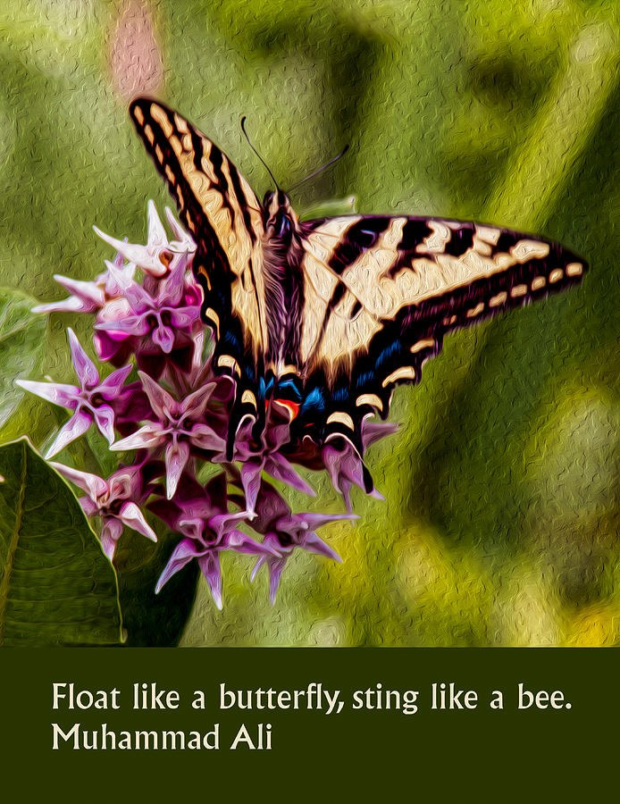
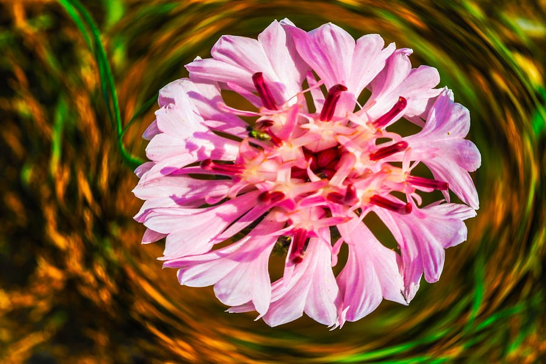
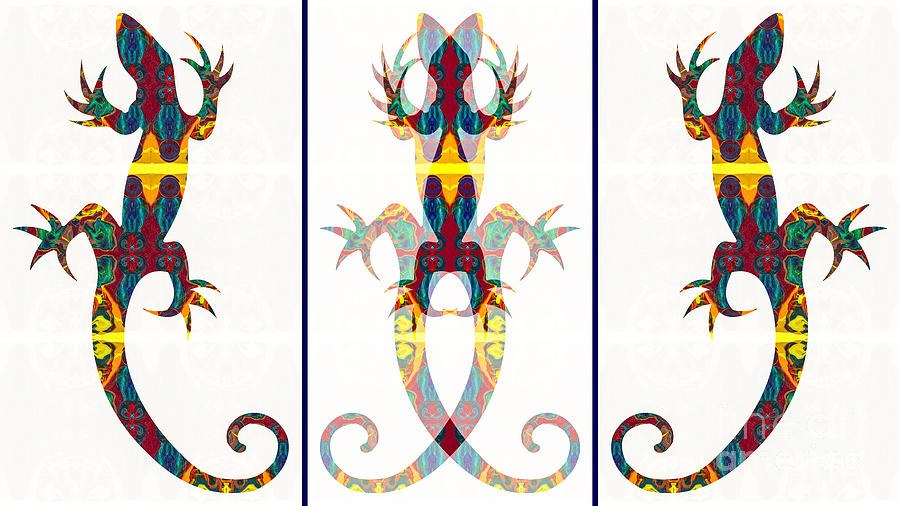
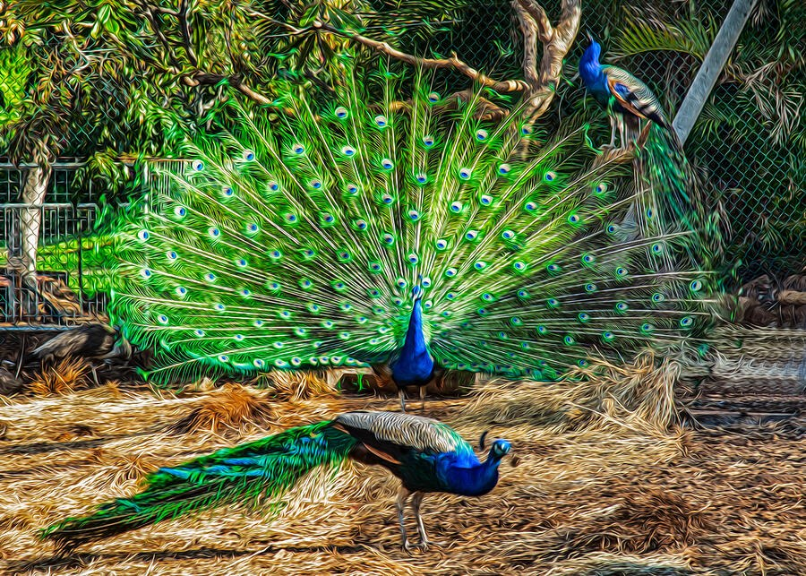
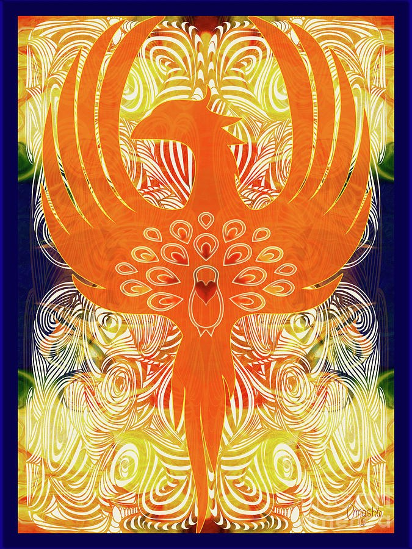
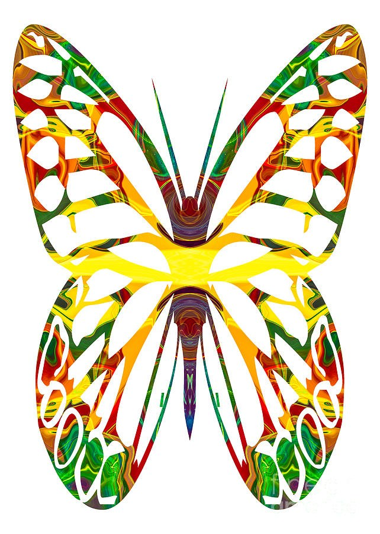
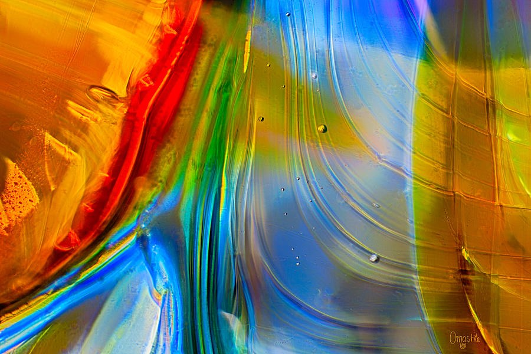
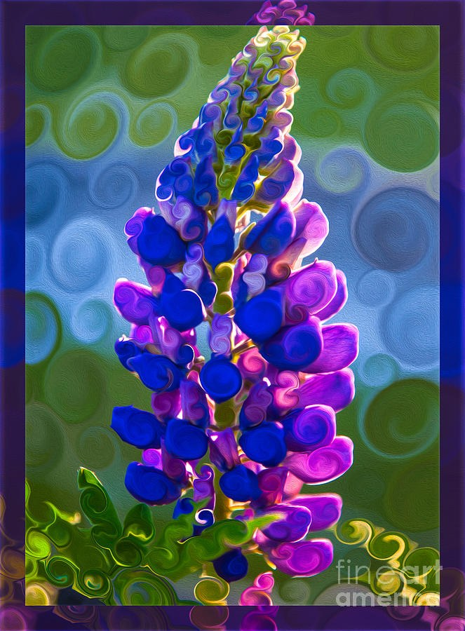
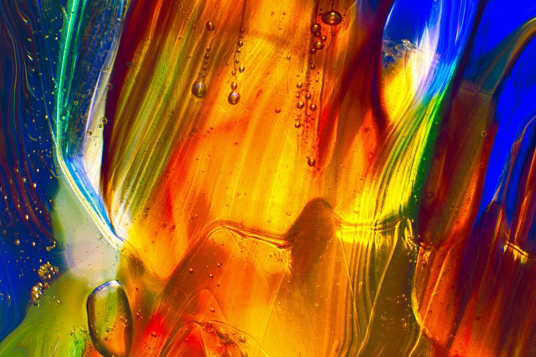

All pieces
 Red Roof Reverie, Half-Timbered House
Red Roof Reverie, Half-Timbered House Yin Yang Window, Black Symbol Over Marbled Gold and Blue
Yin Yang Window, Black Symbol Over Marbled Gold and Blue Golden Whirlpools in Cobalt Blue
Golden Whirlpools in Cobalt Blue Golden Whorl, Yellow Rose in Swirling Paint Texture
Golden Whorl, Yellow Rose in Swirling Paint Texture Sunlit Emblem, Mirrored Abstract in Yellow and Green
Sunlit Emblem, Mirrored Abstract in Yellow and Green Ember Blooms, Yellow Wildflowers Against Dark Bark
Ember Blooms, Yellow Wildflowers Against Dark Bark Cobalt Dome and Ember Seam, Glossy Abstract
Cobalt Dome and Ember Seam, Glossy Abstract Berry Lanterns, Orange Berries Against Dark
Berry Lanterns, Orange Berries Against Dark Green Current, Glowing Filaments Around a Dark Center
Green Current, Glowing Filaments Around a Dark Center Summer Stillness, Swallowtail on a White Daisy
Summer Stillness, Swallowtail on a White Daisy Carnival Mirror - Magenta Kaleidoscope Oval
Carnival Mirror - Magenta Kaleidoscope Oval Crimson Bud, Glossy Red and Amber Abstract
Crimson Bud, Glossy Red and Amber Abstract Ember Heart in a Leaf Wreath
Ember Heart in a Leaf Wreath Ribbon Blaze - Glossy Swirls in Red, Gold and Blue
Ribbon Blaze - Glossy Swirls in Red, Gold and Blue Indigo Eye, Iridescent Glass Orb
Indigo Eye, Iridescent Glass Orb Ember Current, Orange and Amber Swirls
Ember Current, Orange and Amber Swirls Ember Tide, Swirling Orange and Blue Abstract
Ember Tide, Swirling Orange and Blue Abstract Ember Mirror: Orange and Teal Mandala on Navy
Ember Mirror: Orange and Teal Mandala on Navy Ember Medallion, Symmetrical Orange Abstract
Ember Medallion, Symmetrical Orange Abstract
Float Like a Butterfly: Swallowtail on Pink Blossoms
Eye of the Swirl, Pink Flower Jewel Pool, Glowing Translucent Abstract
Jewel Pool, Glowing Translucent Abstract Ember Whirl: Red and Teal Liquid Spirals
Ember Whirl: Red and Teal Liquid Spirals Spun Gold Lily, Swirled Yellow Bloom on Green
Spun Gold Lily, Swirled Yellow Bloom on Green Mirrored Lantern, Golden Symmetrical Abstract
Mirrored Lantern, Golden Symmetrical Abstract Amber Teardrop Glow, Violet and Magenta Abstract
Amber Teardrop Glow, Violet and Magenta Abstract Molten Melody, Five Glowing Music Notes
Molten Melody, Five Glowing Music Notes Amber Current - Radiating Blue and Gold Abstract
Amber Current - Radiating Blue and Gold Abstract Ember Heart, Mirrored Swirl Heart in Amber and Olive
Ember Heart, Mirrored Swirl Heart in Amber and Olive Drawn Summit, Outlined Blue Mountain Peaks
Drawn Summit, Outlined Blue Mountain Peaks Indigo Portal: A Jewel-Toned Yin Yang
Indigo Portal: A Jewel-Toned Yin Yang
Mirror Crawlers: Kaleidoscope Lizard Triptych Ember Wings - Mirrored Red and Gold Abstract
Ember Wings - Mirrored Red and Gold Abstract The Difference You Choose - Bumblebee on Purple Lupine
The Difference You Choose - Bumblebee on Purple Lupine Spiral Sun Bloom, Orange Flower on Black
Spiral Sun Bloom, Orange Flower on Black Veiled Diamond, Symmetrical Violet and Magenta Abstract
Veiled Diamond, Symmetrical Violet and Magenta Abstract Ember Currents, Marbled Orange and Red Abstract
Ember Currents, Marbled Orange and Red Abstract Ember Wings - Mirrored Red and Gold Butterfly
Ember Wings - Mirrored Red and Gold Butterfly Wide Blue Quiet, Sunbeams Over a Still Lake
Wide Blue Quiet, Sunbeams Over a Still Lake Lilac Stillness, Red Boat on a Mirrored Lake
Lilac Stillness, Red Boat on a Mirrored Lake Ember Emblem - Symmetrical Orange and Navy Abstract
Ember Emblem - Symmetrical Orange and Navy Abstract Cobalt Summit, Posterized Snowy Mountain Peaks
Cobalt Summit, Posterized Snowy Mountain Peaks Crimson Axis - Symmetrical Blue and Gold Swirl Abstract
Crimson Axis - Symmetrical Blue and Gold Swirl Abstract Ember Window - Kaleidoscope Mandala in Blue and Orange
Ember Window - Kaleidoscope Mandala in Blue and Orange Ember Rose, Gold Embossed Rose in Tiled Panels
Ember Rose, Gold Embossed Rose in Tiled Panels Ember Tide, Marbled Orange and Plum Abstract
Ember Tide, Marbled Orange and Plum Abstract Cobalt Hush, Blue Lake in a Green Valley
Cobalt Hush, Blue Lake in a Green Valley
Emerald Pageant, Three Peacocks Golden Daybreak, Mirrored Abstract
Golden Daybreak, Mirrored Abstract
Ember Wings, Orange Phoenix with Peacock-Eye Feathers Coneflower in the Green Mist, Pink Floral Portrait
Coneflower in the Green Mist, Pink Floral Portrait Cobalt Mirror, Fallen Logs Below Snowy Peaks
Cobalt Mirror, Fallen Logs Below Snowy Peaks
Sunburst Wings, Symmetrical Butterfly
Ember and Tide, Glowing Glass-Like Abstract Raspberry Whirl - Berries in a Mirror-Bright Swirling Bowl
Raspberry Whirl - Berries in a Mirror-Bright Swirling Bowl Jewel Box Star, Golden Star on a Blue Diamond
Jewel Box Star, Golden Star on a Blue Diamond Solar Ember: Twelve-Rayed Sun Emblem
Solar Ember: Twelve-Rayed Sun Emblem Ember Claw - Crimson Crab Silhouette
Ember Claw - Crimson Crab Silhouette Ember Sting, Red Tribal Scorpion
Ember Sting, Red Tribal Scorpion Into the Pale Grove, Woodland Path Under Blue Sky
Into the Pale Grove, Woodland Path Under Blue Sky
Spiral Lupine, Blue and Violet Flower Spike Crimson Curls, Red Sunflower
Crimson Curls, Red Sunflower Angel in the Marble - Mirrored Amber Wings
Angel in the Marble - Mirrored Amber Wings The Green Doorway - Sunlit Garden Through Leaves
The Green Doorway - Sunlit Garden Through Leaves Amber Eye - Glowing Macro Abstract
Amber Eye - Glowing Macro Abstract Liquid Stones: Swirled Pebbles in Blue and Amber
Liquid Stones: Swirled Pebbles in Blue and Amber
Amber Currents - Glowing Abstract in Cobalt Blue Sundown Sprinkler, Painterly Mountain Pasture
Sundown Sprinkler, Painterly Mountain Pasture Wings Into the Golden Sun - Blue Bird Relief
Wings Into the Golden Sun - Blue Bird Relief Ember Totem: Mirrored Abstract in Cobalt and Amber
Ember Totem: Mirrored Abstract in Cobalt and Amber Cobalt Crest, Kaleidoscope Abstract in Blue and Crimson
Cobalt Crest, Kaleidoscope Abstract in Blue and Crimson Molten Sun Mask, Mirrored Yellow Abstract
Molten Sun Mask, Mirrored Yellow Abstract The Garden Visitor, Giant Insect Sculpture Among Palms
The Garden Visitor, Giant Insect Sculpture Among Palms Face to Face, Rust Swirl Forms on Turquoise
Face to Face, Rust Swirl Forms on Turquoise Lantern Window, Glowing Abstract Swirl in Green and Gold
Lantern Window, Glowing Abstract Swirl in Green and Gold Moss and Ember, Translucent Green and Coral Abstract
Moss and Ember, Translucent Green and Coral Abstract Cobalt Ember: Mirrored Abstract in Blue, Gold and Red
Cobalt Ember: Mirrored Abstract in Blue, Gold and Red Cobalt Jewel Wings, Blue Butterfly
Cobalt Jewel Wings, Blue Butterfly